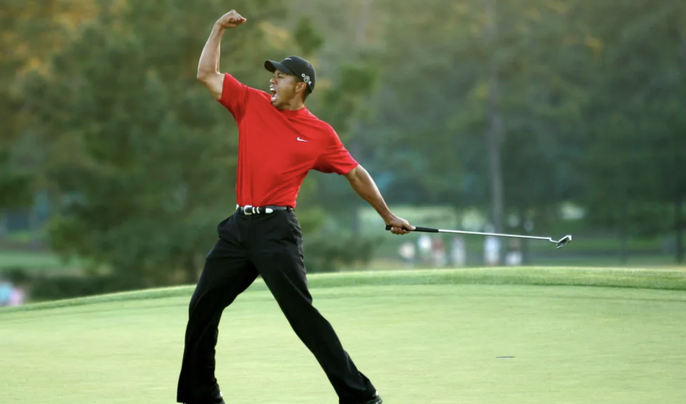

Calmacs First Proper Webpage
Dunblane High School
Stirling County Rugby Club
Aberdeen Uni Engineering
This website is awesome!
This website has some subtext that goes under the main title. It's a smaller font and the colour is lower contrast.
Sign up

The best sports
1. Football - most popular sport in the world for a reason, this classic takes my number one spot
2. Golf - an underrated gem, golf is the perfect sport. Ideal to play with your mates while sipping on a nice cold beer.
3. Rugby - A sport close to my heart, grew up playing it. A true team sport, unlike most team sports a single star player cannot win a game.
4. Tennis - Great fun to play and watch. Probably only made the list as I am from Andy Murray town.
“The greatest thing about tomorrow is I will be better than I am today.”
Tiger Woods